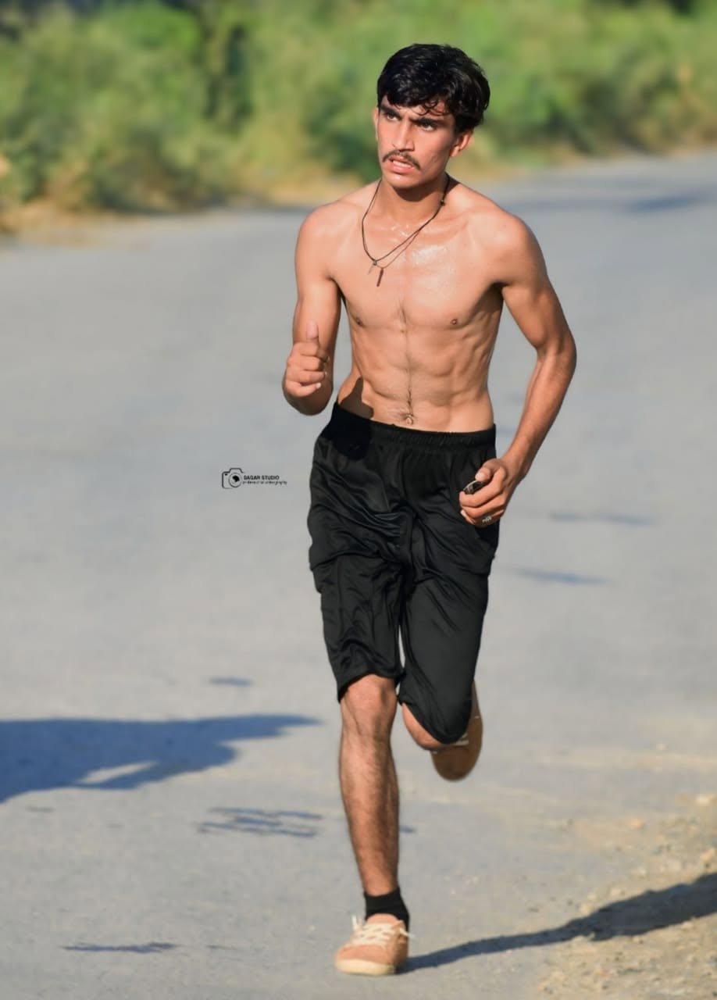
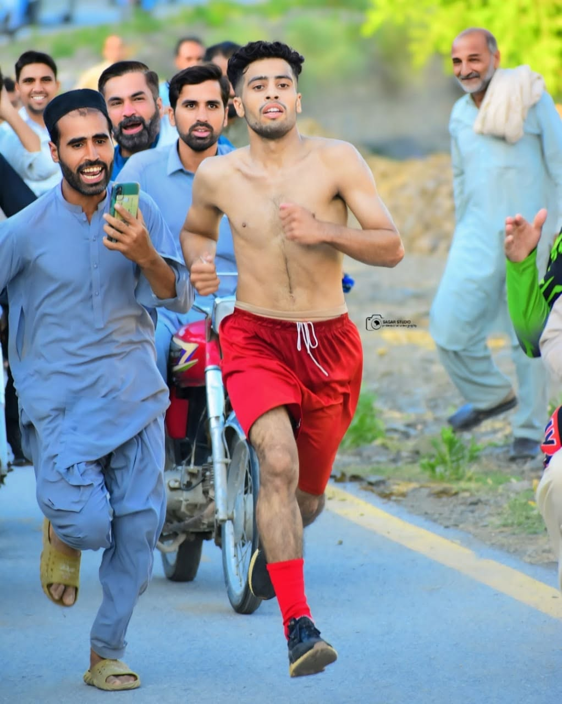
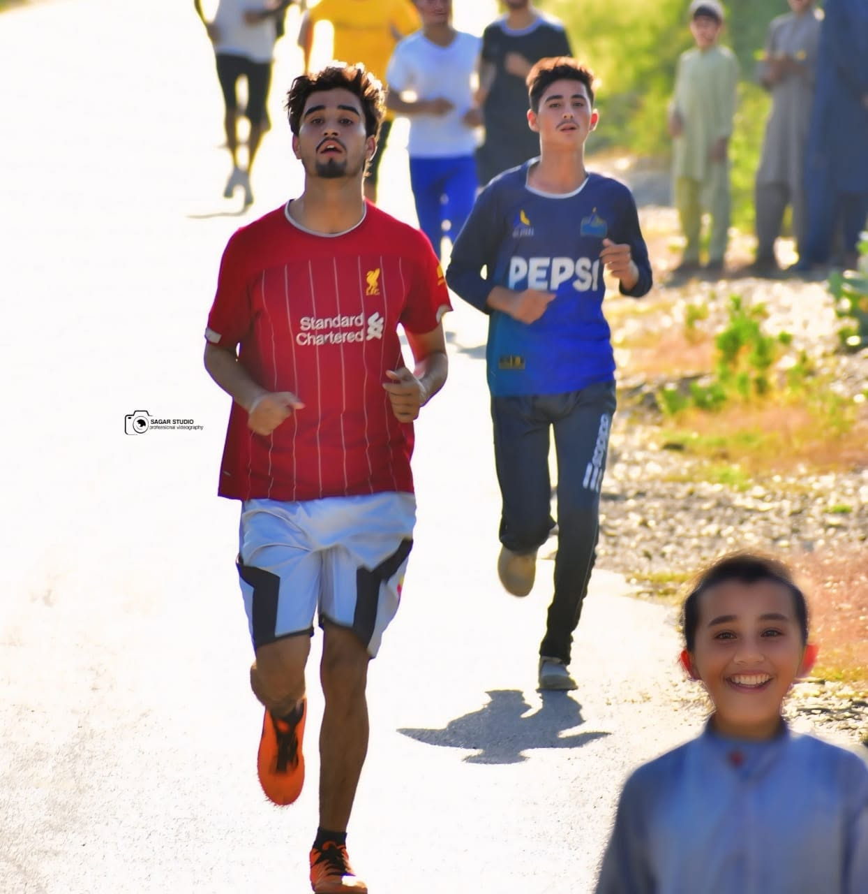

01THE BEGINNING
Season One
The first edition established Khawrai Marathon Race as a local sporting initiative for the people of Khawrai Village. It brought the village community together around running, effort and friendly competition.
Preparing the story of our race and community.
Our story, our community and the next chapter of the race.
Khawrai Marathon Race brings people together through running, positive competition and a shared pride in our communities. After two successful editions centred on Khawrai Village, Season Three opens the starting line to a wider circle of neighbouring villages.

The heart of Khawrai Marathon Race is simple: make sport a welcoming point of connection. A race gives people a reason to train, show courage, support one another and celebrate effort - whether they are running for a personal goal or to represent their village.
With Season Three, that spirit reaches beyond the original village boundary. The event is designed to bring neighbouring communities into one shared sporting occasion, with respect for every participant and the places they represent.
Each edition builds on the community spirit that inspired the race from the beginning.
The first edition established Khawrai Marathon Race as a local sporting initiative for the people of Khawrai Village. It brought the village community together around running, effort and friendly competition.
The second edition continued that village-focused tradition. Runners took to the road, the community gathered around the race, and the experience helped prepare the ground for a broader third season.
View Season Two photo galleryThe next chapter is scheduled for 15 November 2026. The race expands its invitation to runners from Khawrai and surrounding villages, with official organisation by District Sports Office Nowshera.


These photographs preserve moments from Season Two and honour the runners whose participation helped shape the continuing story of Khawrai Marathon Race.
Where the first two seasons were exclusively for people of Khawrai Village, Season Three extends its invitation to runners from the following places and nearby areas. This broader participation is an important new step for the event.
Season Three continues the project management leadership while bringing in the district sports office as the event organiser.
Managing Khawrai Marathon Race Season Three and carrying forward the experience and community commitment built through the first two seasons.
+92 333 9095878Season Three is organised by District Sports Office Nowshera, Directorate General of Sports, Government of Khyber Pakhtunkhwa.
The result matters, but so does the journey: the preparation, the support shared along the route and the respect shown to every runner.
Encouraging people to make physical activity and personal wellbeing part of everyday life.
Recognising effort, discipline, fair competition and respect for fellow participants.
Bringing villages together through a shared event and a positive local tradition.
Making the starting line a place where runners from the invited communities can come together.
For enquiries about Khawrai Marathon Race Season Three, contact the race manager.
Waseem Shahzad Fida+92 333 9095878